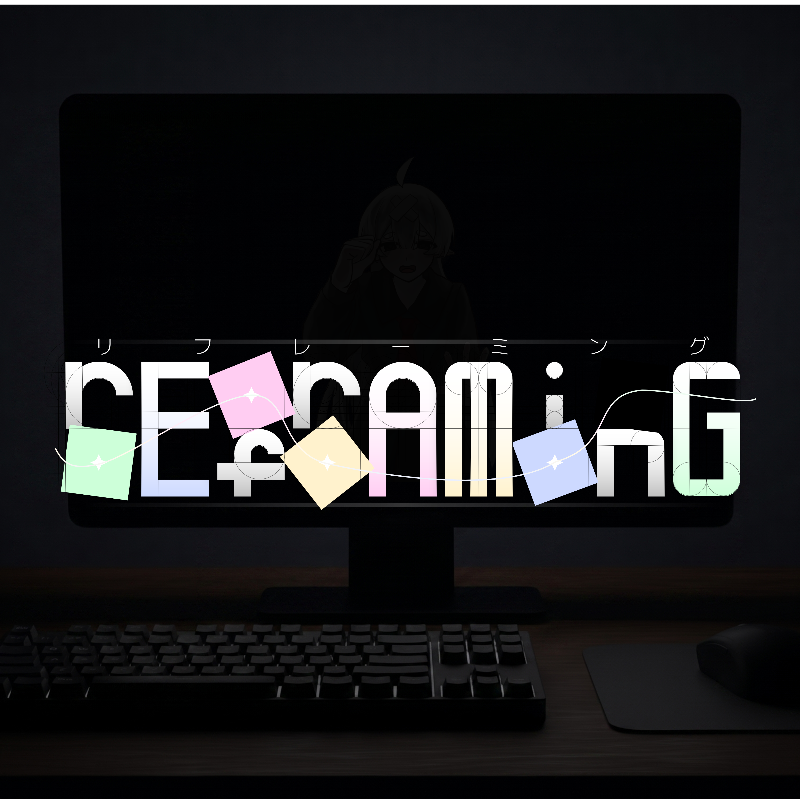
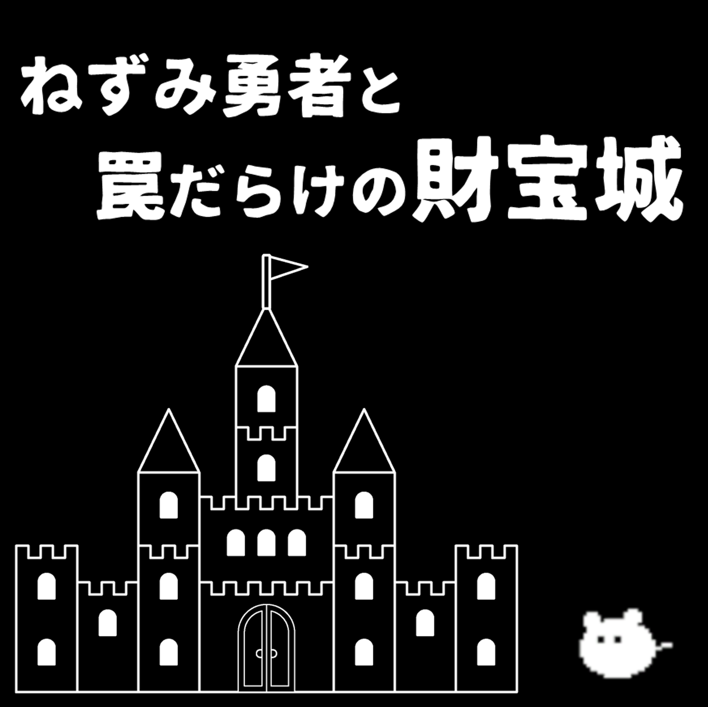

WORKS
プランナー・デザイナー

rEfrAMinG
ジャンル：謎解きアクション | 媒体：PC
2026年Bitsummit Game Jam出展作品。あなたの現実の行動がゲームの世界に反映される。
作品を見る
→
個人製作

CrazySignUp
ジャンル：謎解きアクション | 媒体：Web
とあるサービスサイトに会員登録するまでのタイムアタック。意地悪すぎる手順を踏む必要がある。
作品を見る
→
個人製作

framing
ジャンル：謎解き | 媒体：Web
やってくる５問の謎を解き明かす。
作品を見る
→
個人製作

GIMISSION
ジャンル：カジュアル | 媒体：WebGL
ミニゲームしながらタイマーをぎりぎりで止める、マルチタスクでチキンレースなカジュアルゲーム。
作品を見る
→
謎制作・デザイナー

１１月祭謎解き課題
ジャンル：周遊型謎解きゲーム | 媒体：学祭イベント
学院内を探索して謎を解く、2025年１１月祭で開催したイベント。
開催終了
プランナー

ねずみ勇者と罠だらけの財宝城
ジャンル：アクション | 媒体：PC
京都コンピュータ学院１１月祭にて出展。操作方法はマウスだけ。罠を避けて財宝をかき集める。
出展終了